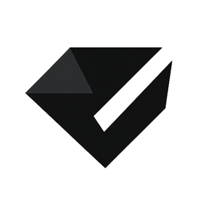

FPS Unlocker
Sınırı kaldırıp yüksek tazeleme hızlarında daha akıcı oyun hissi alabilirsin.

Vexa ClientHaxBall masaüstü istemcisi
Vexa Client; FPS araçları, Discord durumu, arka plan sistemi, kısa yollar ve otomatik güncelleme akışıyla HaxBall deneyimini tek pencerede toplar.
En güncel kurulum dosyası otomatik seçilecek.
Özellikler
Sınırı kaldırıp yüksek tazeleme hızlarında daha akıcı oyun hissi alabilirsin.
Kendi görselini ya da hazır sistem arka planlarını kullan, maç başlayınca performans için optimize edilsin.
Durumunu Discord üzerinde gösterebilir, arkadaşlarının hangi odada olduğunu kolayca paylaşabilirsin.
Avatar, extrapolation ve sık kullanılan komutları hızlıca yönetmek için pratik kısa yollar.
Kurulum
Vexa bağımsız bir topluluk projesi olduğu için bazı Windows kurulumlarında bilinmeyen yayıncı uyarısı çıkabilir. Dosyalar GitHub release üzerinden yayınlanır; güncel sürümü her zaman bu sayfadaki otomatik indirme butonundan al.